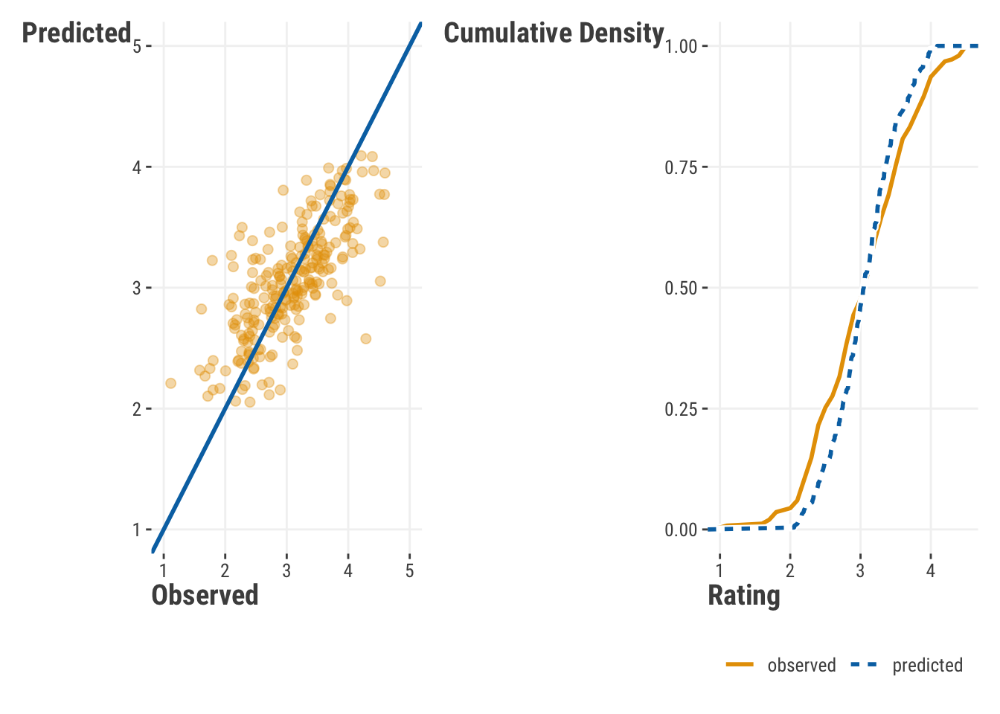

| Metric | Description | Other Names/Notes |
|---|---|---|
| Regression | ||
| RMSE | Root mean squared error | MSE (before square root) |
| MAE | Mean absolute error | |
| MAPE | Mean absolute percentage error | |
| RMSLE | Root mean squared log error | |
| R-squared | Amount of variance shared by predictions and target | Coefficient of determination |
| Deviance/AIC | Generalization of sum of squared error | Also "deviance explained" for similar R-sq interpretation |
| Classification | ||
| Accuracy | Percent correct | Error rate is 1 - Accuracy |
| Precision | Percent of positive predictions that are correct | Positive Predictive Value |
| Recall | Percent of positive samples that are predicted correctly | Sensitivity, True Positive Rate |
| Specificity | Percent of negative samples that are predicted correctly | True Negative Rate |
| Negative Predictive Value | Percent of negative predictions that are correct | |
| F1 | Harmonic mean of precision and recall | F-Beta1 |
| AUC | Area under the ROC curve | |
| False Positive Rate | Percent of negative samples that are predicted incorrectly | Type I Error, alpha |
| False Negative Rate | Percent of positive samples that are predicted incorrectly | Type II Error, beta, Power is 1 - beta |
| Phi | Correlation between predicted and actual | Matthews Correlation |
| Log loss | Negative log likelihood of the predicted probabilities | |
| 1 Beta = 1 for F1 | ||
2 Knowing Your Model
TODO: totally okay with a screenshot of Redd here to go with the quote.
In addition to giving the world one of the greatest television show theme songs – Quincy Jones’ The Streetbeater – Sanford & Son gave us an insightful quote for offering criticism: “You big dummy.” While we don’t advocate for swearing at or denigrating your model, how do you know if your model is performing up to your expectations? It is easy to look at your coefficients, t-values, and an adjusted \(R^2\), and say, “Wow! Look at this great model!” Your friends will be envious of such terrific p-values, and all of the strangers that you see at social functions will be impressed. What happens if that model falls apart on new data, though? What if a stakeholder wants to know exactly how a prediction was made for a specific business decision? Sadly, all of the stars that you gleefully pointed towards in your console will not offer you any real answers.
Instead of falling in immediate love with your model, you should ask real questions of it. How does it perform on different slices of data? Do predictions make sense? Is your classification cut-point appropriate? In other words, you should criticize your model before you decide it can be used for its intended purposes. Remember that it is data modeling, not data truthing. In other words, you should always be prepared to call your model a “big dummy”.
2.1 Key Ideas
- Metrics can help you assess how well your model is performing, and they can also help you compare different models.
- Different metrics can be used depending on the goals of your model.
- Visualizations can help you understand how your model is making predictions and which variables are important.
- Feature importance is very difficult to ascertain even in the simplest of models, but there are tools to help you understand how much each feature contributes to a prediction.
2.1.1 Why this matters
It’s never good enough to simply get model results. You need to know how well your model is performing and how it is making predictions. You also should be comparing your model to other alternatives. Doing so provides more confidence in your model and helps you to understand how it is working, and just as importantly, where it fails. This is actionable knowledge.
2.1.2 Good to know
This takes some of the things we see in other chapters on linear models and machine learning. We’d suggest have linear model basics down pretty well.
2.2 Model Metrics
A first step in understanding our model can be done with summary statistics, typically called metrics Regression and classification have different metrics for assessing model performance. We want to give you a sample of some of the more common one, but we also want to acknowledge that there are many more that you can use! We would always recommend looking at a few different metrics to get a better sense of how your model is performing.
Table 2.1 illustrates some of the most commonly used performance metrics. Just because these are popular or applicable for your situation, doesn’t mean they are the only ones you can or even should use. Nothing keeps you from using more than one metric for assessment, and in fact, it is often a good idea to do so. Your should have a working knowledge of these.
TODO: check table for pdf
2.2.1 Regression Metrics
Recall that a primary goal of our standard linear model is to produce predictions. Since we are predicting a specific value, we need to be able to compare that prediction to its corresponding observed value. The closer our prediction is to the actual value, the better our model is performing. As we saw in the above table, when we have a numeric target there are quite a few metrics that help us understand prediction-target correspondence, so let’s look at some of those.
But before we create a model to get us started, we are going to read in our data and then create two different splits within our data: a training set and a testing set. In other words, we are going to partition our data so that we can train a model and then see how well that model performs with new data1.
df_reviews = read.csv(
"data/movie_reviews_processed.csv"
)
initial_split = sample(
x = 1:nrow(df_reviews),
size = nrow(df_reviews) * .75,
replace = FALSE
)
training_data = df_reviews[initial_split, ]
testing_data = df_reviews[-initial_split, ]import pandas as pd
import numpy as np
from sklearn.model_selection import train_test_split
df_reviews = pd.read_csv("data/movie_reviews_processed.csv")
training_data, testing_data = train_test_split(
df_reviews,
test_size = 0.25,
random_state = 123
)You’ll notice that we created training data with 75% of our data and we will use the other 25% to test our model. With training data in hand, let’s produce a model to predict review rating. We’ll use scaled versions of several features, and use the ‘year’ features starting at year 0, which is the earliest year in our data. Finally we also include the genre of the movie as a categorical variable.
model_train_reg = lm(
rating ~
review_year_0
+ release_year_0
+ age_sc
+ length_minutes_sc
+ total_reviews_sc
+ word_count_sc
+ genre
,
training_data
)import statsmodels.api as sm
import statsmodels.formula.api as smf
# we'll use 'features' later also
features = [
"review_year_0",
"release_year_0",
"age_sc",
"length_minutes_sc",
"total_reviews_sc",
"word_count_sc",
"genre",
]
model = 'rating ~ ' + " + ".join(features)
model_train_reg = smf.ols(
formula = model,
data = training_data
).fit()Now that we have a model on our training data, we can use it to make predictions on our test data:
predictions = predict(model_train_reg, newdata = testing_data)predictions = model_train_reg.predict(testing_data)The goal now is to find out how close our predictions match reality. Let’s look at them first:

Obviously, our points do not make a perfect line, which would indicate perfect prediction, so we’d like to determine how far off we are. There are a number of metrics that can be used to measure this. We’ll go through a few of them here.
2.2.1.1 R-squared
Anyone that has done linear regression has come across the \(R^2\) value. It is a measure of how well the model explains the variance in the target. One way to calculate it is as follows:
\[R^2 = 1 - \frac{\sum_{i=1}^{n}(y_i - \hat{y}_i)^2}{\sum_{i=1}^{n}(y_i - \bar{y})^2}\]
where \(y_i\) is the observed value, \(\hat{y}_i\) is the predicted value, and \(\bar{y}\) is the mean of the observed values. The \(R^2\) value is a measure of how much variance in the target (the denominator) is attibutable to the model’s predictions (numerator). It is a value between 0 and 1, with 1 indicating that the model explains all of the variance in the target.
More simply, \(R^2\) is the squared correlation of our predicted values and the target. In that sense it can almost always be useful as a descriptive measure, just like we use means and standard deviations in exploratory data analysis. However, it is not so great at telling us about predictive quality. Why? Take your predictions from a our rating model, and add 10 to them, or make them all negative. In both cases your predictions would be ridiculous, but your \(R^2\) will be the same. Another problem is that for training data, \(R^2\) will always increase as you add more variables to your model, whether they are useful or pure noise! This is why we use other metrics to assess predictive quality.
1 - sum((testing_data$rating - predictions)^2) / sum((testing_data$rating - mean(testing_data$rating))^2)[1] 0.522237yardstick::rsq_trad_vec(testing_data$rating, predictions)[1] 0.522237# conceptually identical, but slight difference due to how internal calculations are done
cor(testing_data$rating, predictions)^2 [1] 0.5225642yardstick::rsq_vec(testing_data$rating, predictions)[1] 0.5225642from sklearn.metrics import r2_score
1 - np.sum((testing_data.rating - predictions)**2) / np.sum((testing_data.rating - np.mean(testing_data.rating))**2)0.508431158347433r2_score(testing_data.rating, predictions)0.508431158347433# conceptually identical, but slight difference due to how calculations are done
np.corrcoef(testing_data.rating, predictions)[0, 1]**20.51473296324532662.2.1.2 Mean Squared Error
One of the most common performance metrics for numeric targtes is the mean squared error (MSE) and its square root, root mean squared error (RMSE). The MSE is the average of the squared differences between the predicted and actual values. It is calculated as follows:
\[MSE = \frac{1}{n}\sum_{i=1}^{n}(y_i - \hat{y}_i)^2\]
MSE is a great metric for penalizing large errors. Since errors are squared, the larger the error, the larger the penalty. As mentioned, the root mean squared error (RMSE) is just the square root of the MSE. Like MSE, RMSE is a great metric for penalizing large errors, but if you want to that approach and still have a metric that is in the same units as the original data, RMSE is the metric for you. It is calculated as follows:
\[RMSE = \sqrt{MSE}\]
mean((testing_data$rating - predictions)^2)[1] 0.1858096yardstick::rmse_vec(testing_data$rating, predictions)^2[1] 0.1858096sqrt(mean((testing_data$rating - predictions)^2))[1] 0.4310564yardstick::rmse_vec(testing_data$rating, predictions)[1] 0.4310564from sklearn.metrics import mean_squared_error
np.mean((testing_data.rating - predictions)**2)0.20798285555421575mean_squared_error(testing_data.rating, predictions)0.20798285555421575np.sqrt(np.mean((testing_data.rating - predictions)**2))0.4560513738102493mean_squared_error(testing_data.rating, predictions, squared = False)0.45605137381024932.2.1.3 Mean Absolute Error
The mean absolute error (MAE) is the average of the absolute differences between the predicted and actual values. It is calculated as follows:
\[MAE = \frac{1}{n}\sum_{i=1}^{n}|y_i - \hat{y}_i|\]
MAE is a great metric when all you really want to know is how far off your predictions are from the actual values. It is not as sensitive to large errors as the MSE.
mean(abs(testing_data$rating - predictions))[1] 0.3383954yardstick::mae_vec(testing_data$rating, predictions)[1] 0.3383954from sklearn.metrics import mean_absolute_error
np.mean(abs(testing_data.rating - predictions))0.3704072983307527mean_absolute_error(testing_data.rating, predictions)0.37040729833075272.2.1.4 Mean Absolute Percentage Error
The mean absolute percentage error (MAPE) is the average of the absolute differences between the predicted and actual values, expressed as a percentage of the actual values. It is calculated as follows:
\[MAPE = \frac{1}{n}\sum_{i=1}^{n}\frac{|y_i - \hat{y}_i|}{y_i}\]
mean(
abs(testing_data$rating - predictions) /
testing_data$rating
) * 100[1] 12.00139yardstick::mape_vec(testing_data$rating, predictions)[1] 12.00139from sklearn.metrics import mean_absolute_percentage_error
np.mean(
abs(testing_data.rating - predictions) /
testing_data.rating
) * 10013.464399850975898mean_absolute_percentage_error(testing_data.rating, predictions) * 10013.4643998509758982.2.1.5 Which To Use?
In the end, it won’t hurt to look at a few of these metrics to get a better idea of how well your model is performing. You will always be using these metrics to compare different models, so use a few of them to get a better sense of how well your models are performing relative to one another. Does adding a variable help drive down RMSE, indicating that the variable helps to reduce large errors? In other words, does adding complexity to your model provide a big reduction in error? If adding variables doesn’t help reduce error, do you really need to include it in your modelU+0203D;
2.2.2 Classification Metrics
Whenever we are classifying outcomes, we don’t have the same ability to compare a predicted score to an observed score – instead, we are going to use the predicted probability of an outcome, establish a cut-point for that probability, convert everything below that cut-point to 0, and then convert everything at or above that cut-point to 1. We can then compare a table predicted and actual classes.
Let’s start with a model to predict whether a review is “good” or “bad”. We will use the same training and testing data that we created above.
model_train_class = glm(
rating_good ~
genre + review_year_0
+ release_year_0
+ age_sc
+ length_minutes_sc
+ total_reviews_sc
+ word_count_sc
+ genre
,
training_data,
family = binomial
)
summary(model_train_class)
Call:
glm(formula = rating_good ~ genre + review_year_0 + release_year_0 +
age_sc + length_minutes_sc + total_reviews_sc + word_count_sc +
genre, family = binomial, data = training_data)
Coefficients:
Estimate Std. Error z value Pr(>|z|)
(Intercept) -1.86459 0.43000 -4.336 1.45e-05 ***
genreComedy 2.36609 0.40016 5.913 3.36e-09 ***
genreDrama 2.10262 0.26193 8.027 9.95e-16 ***
genreHorror 0.01011 0.41956 0.024 0.98077
genreKids 0.07226 0.36804 0.196 0.84434
genreOther 0.08938 0.36778 0.243 0.80798
genreRomance 0.43456 0.37733 1.152 0.24946
genreSci-Fi 0.01289 0.41785 0.031 0.97539
review_year_0 0.03553 0.01767 2.011 0.04434 *
release_year_0 0.02941 0.01037 2.835 0.00458 **
age_sc -0.27453 0.09328 -2.943 0.00325 **
length_minutes_sc 0.63768 0.10394 6.135 8.51e-10 ***
total_reviews_sc 1.00843 0.10882 9.267 < 2e-16 ***
word_count_sc -0.51049 0.10215 -4.997 5.81e-07 ***
---
Signif. codes: 0 '***' 0.001 '**' 0.01 '*' 0.05 '.' 0.1 ' ' 1
(Dispersion parameter for binomial family taken to be 1)
Null deviance: 1031.17 on 749 degrees of freedom
Residual deviance: 736.51 on 736 degrees of freedom
AIC: 764.51
Number of Fisher Scoring iterations: 5# for later
y_target_testing_bin = ifelse(testing_data$rating_good == "good", 1, 0)import statsmodels.api as sm
import statsmodels.formula.api as smf
model = 'rating_good ~ ' + " + ".join(features)
model_train_class = smf.glm(
formula = model,
data = training_data,
family = sm.families.Binomial()
).fit()
model_train_class.summary() | Dep. Variable: | rating_good | No. Observations: | 750 |
| Model: | GLM | Df Residuals: | 736 |
| Model Family: | Binomial | Df Model: | 13 |
| Link Function: | Logit | Scale: | 1.0000 |
| Method: | IRLS | Log-Likelihood: | -367.76 |
| Date: | Mon, 26 Feb 2024 | Deviance: | 735.52 |
| Time: | 20:55:57 | Pearson chi2: | 672. |
| No. Iterations: | 5 | Pseudo R-squ. (CS): | 0.3189 |
| Covariance Type: | nonrobust |
| coef | std err | z | P>|z| | [0.025 | 0.975] | |
| Intercept | -1.7239 | 0.439 | -3.931 | 0.000 | -2.583 | -0.864 |
| genre[T.Comedy] | 2.4492 | 0.448 | 5.462 | 0.000 | 1.570 | 3.328 |
| genre[T.Drama] | 1.9952 | 0.256 | 7.789 | 0.000 | 1.493 | 2.497 |
| genre[T.Horror] | -0.0215 | 0.397 | -0.054 | 0.957 | -0.799 | 0.756 |
| genre[T.Kids] | -0.1908 | 0.358 | -0.533 | 0.594 | -0.893 | 0.511 |
| genre[T.Other] | 0.0147 | 0.363 | 0.041 | 0.968 | -0.696 | 0.726 |
| genre[T.Romance] | 0.1751 | 0.385 | 0.455 | 0.649 | -0.579 | 0.929 |
| genre[T.Sci-Fi] | 0.2399 | 0.416 | 0.577 | 0.564 | -0.575 | 1.055 |
| review_year_0 | 0.0272 | 0.018 | 1.529 | 0.126 | -0.008 | 0.062 |
| release_year_0 | 0.0355 | 0.011 | 3.370 | 0.001 | 0.015 | 0.056 |
| age_sc | -0.2167 | 0.094 | -2.296 | 0.022 | -0.402 | -0.032 |
| length_minutes_sc | 0.5661 | 0.106 | 5.360 | 0.000 | 0.359 | 0.773 |
| total_reviews_sc | 0.9022 | 0.109 | 8.312 | 0.000 | 0.689 | 1.115 |
| word_count_sc | -0.5834 | 0.106 | -5.522 | 0.000 | -0.790 | -0.376 |
Now that we have our model trained, we can use it to get the predicted probabilities for each observation.
predictions = predict(
model_train_class,
newdata = testing_data,
type = "response"
)predictions = model_train_class.predict(testing_data)We are going to take those probability values and make a decision to convert everything at or above .5 to the positive class (a “good” review). It is a bold assumption, but one that we will make at first!
predictions = ifelse(predictions >= .5 , 1, 0)predictions = np.where(predictions >= .5, 1, 0)
predictions = pd.Series(predictions)2.2.2.1 Confusion Matrix
The confusion matrix is a table that shows the number of correct and incorrect predictions made by the model.
from sklearn.metrics import confusion_matrix
rating_cm = confusion_matrix(testing_data.rating_good, predictions)And here is our result:
| True 0 | True 1 | |
|---|---|---|
| Predicted 0 | TN: 70 | FN: 35 |
| Predicted 1 | FP: 32 | TP: 113 |
TN: A True Negative is an outcome where the model correctly predicts the negative class – the model correctly predicted that the review was not good.
FN: A False Negative is an outcome where the model incorrectly predicts the negative class – the model incorrectly predicted that the review was not good.
FP: A False Positive is an outcome where the model incorrectly predicts the positive class – the model incorrectly predicted that the review was good.
TP: A True Positive is an outcome where the model correctly predicts the positive class – the model correctly predicted that the review was good.
In an ideal world, we would have all of our observations fitting nicely in the diagonal of that table. Unfortunately, we don’t live in the ideal world and we always have values in the off diagonal. The more values we have in the off diagonal (i.e., in the FN and FP spots), the worse our model is at classifying outcomes.
Let’s look at some metrics that will help to see if we’ve got a suitable model or not.
TODO: these are in the table that’s now in this chapter, so we can just use summary of confmat e.g. via yardstick and/or pycm
2.2.2.2 Accuracy
Accuracy is the first thing you see and the last thing that you trust! Of all the metrics to assess the quality of classification, accuracy is the easiest to cheat. If you have any class imbalance (i.e., one class within the target has far more observations than the other), you can get a high accuracy by simply predicting the majority class all of the time!
Accuracy’s allure is in its simplicity. The accuracy is the proportion of correct predictions made by the model. It is calculated as follows:
\[\text{Accuracy} = \frac{TP + TN}{TP + TN + FP + FN}\]
From our table above, we can calculate the accuracy as follows- it’s just the sum of the values of the diagonal divided by the sum of all the values in the table.
TN = rating_cm[1]
TP = rating_cm[4]
FN = rating_cm[3]
FP = rating_cm[2]
sum(diag(rating_cm)) / sum(rating_cm)[1] 0.732TN = rating_cm[0][0]
TP = rating_cm[1][1]
FN = rating_cm[1][0]
FP = rating_cm[0][1]
(TN + TP) / (TN + TP + FN + FP)0.796To get around the false sense of confidence that accuracy alone can promote, we can look at a few other metrics.
2.2.2.3 Sensitivity/Recall/True Positive Rate
Sensitivity, also known as recall or the true positive rate, is the proportion of observed positives that are correctly predicted as such by the model. If you want to know how well your model predicts the positive class, sensitivity is the metric for you. It is calculated as follows:
\[\text{Sensitivity} = \frac{TP}{TP + FN}\]
TP / (TP + FN)[1] 0.7635135TP / (TP + FN)0.85714285714285712.2.2.4 Specificity/True Negative Rate
Specificity, also known as the true negative rate, is the proportion of actual negatives that are correctly identified as such. If you want to know how well your model will work with the negative class, specificity is a great metric. It is calculated as follows:
\[\text{Specificity} = \frac{TN}{TN + FP}\]
TN / (TN + FP)[1] 0.6862745TN / (TN + FP)0.72649572649572652.2.2.5 Precision/Positive Predictive Value
The precision is the proportion of positive predictions that are correct. It is calculated as follows:
\[\text{Precision} = \frac{TP}{TP + FP}\]
TP / (TP + FP)[1] 0.7793103TP / (TP + FP)0.78082191780821922.2.2.6 Negative Predictive Value
The negative predictive value is the proportion of negative predictions that are correct. It is calculated as follows:
\[\text{NPV} = \frac{TN}{TN + FN}\]
TN / (TN + FN)[1] 0.6666667TN / (TN + FN)0.8173076923076923Let’s get a confusion matrix and stats using packages that will give us a lot of these metrics at once.
cm = yardstick::conf_mat(
tibble(
pred = factor(predictions),
y = factor(testing_data$rating_good),
),
truth = y,
estimate = pred,
)
summary(cm)from pycm import ConfusionMatrix
cm = ConfusionMatrix(testing_data.rating_good.to_numpy(), predictions.to_numpy(), digit = 3)
pd.DataFrame(cm.overall_stat)Some additional measures we might look at include the following. Those with an asterisk are also in table Table 2.1.
- kappa: A measure of how much better the model is than random guessing.
- Prevalence: The proportion of actual positives in the data. If you don’t know this, accuracy is fairly meaningless.
- Balanced Accuracy: The average of the sensitivity (TPR) and specificity (TNR).
- F1*: The harmonic mean of precision and recall.
- AUC*: The area under the ROC curve.
2.2.2.7 Ideal Decision Points
Earlier, when we just obtained the default predicted class, we used a predicted probability value of 0.5 to establish our predicted class. That is a pretty bold assumption on our part and we should probably make sure that the cut-off value we choose is going to offer use the best performance.
To handle this task, we will start by creating a Receiver Operating Characteristic (ROC) curve. This curve plots the true positive rate (TPR) against the false positive rate (FPR) at various threshold settings. The area under the curve (AUC) is a measure of how well the model is able to distinguish between the two classes. The closer the AUC is to 1, the better the model is at distinguishing between the two classes.
library(pROC)
prediction_prob = predict(
model_train_class,
testing_data,
type = "response"
)
roc = roc(
testing_data$rating_good,
prediction_prob
)
plot(roc)auc(roc)from sklearn.metrics import roc_curve, auc, RocCurveDisplay
fpr, tpr, thresholds = roc_curve(
testing_data.rating_good,
model_train_class.predict(testing_data)
)
RocCurveDisplay(fpr=fpr, tpr=tpr).plot()auc(fpr, tpr)
With ROC curves and AUC values, we can get a sense of how well our model is able to distinguish between the two classes. Now we can find the ideal cut-point for balancing the TPR and FPR.
coords(roc, "best") threshold specificity sensitivity
1 0.6158066 0.8431373 0.7094595cut = thresholds[np.argmax(tpr - fpr)]Those coordinates are going to give us the “best” decision cut-point, though know that there are different and equally valid ways of going about choosing the ideal cutpoint. Instead of being naive about setting our probability to .5, this will give a cut-point that will lead to better classifications for our testing data. We will leave it to you to take that ideal cut-point value and update your metrics to see how much of a difference it will make.
Whether it is a meager, modest, or meaningful improvement is going to vary from situation to situation, as will how you determine if your model is “good” or “bad”. Is this a good model? Are you more interested in correclty identifying the positive class, or the negative class? Are you more interested in true/false positives or true/false negatives? These are all questions that you will need to answer depending on the modeling context.
2.2.3 Model Comparison
Another common way to understand our model is by looking at how it compares to other models. We can do this by comparing the metric values of our choice, for example, with RMSE or ROC. Let’s see this in action for our regression model. Here we will compare three models: one with three features, one with additional features, and the three feature model with interactions with genrea. Our goal will be to see how these perform on the test set based on RMSE.
# create the models
model_3 = lm(
rating ~
review_year_0
+ release_year_0
+ age_sc
,
training_data
)
model_7 = lm(
rating ~
review_year_0
+ release_year_0
+ age_sc
+ length_minutes_sc
+ total_reviews_sc
+ word_count_sc
+ genre
,
training_data
)
model_3_int = lm(
rating ~
review_year_0 * genre
+ release_year_0 * genre
+ age_sc * genre
,
training_data
)
# get the predictions
result = map(
list(model_3, model_7, model_3_int),
~ predict(.x, newdata = testing_data)
) |>
map_dbl(
~ yardstick::rmse_vec(testing_data$rating, .)
)import statsmodels.formula.api as smf
from sklearn.metrics import root_mean_squared_error
# create the models
model_3 = smf.ols(
formula='rating ~ review_year_0 + release_year_0 + age_sc',
data=training_data
).fit()
model_7 = smf.ols(
formula='rating ~ review_year_0 + release_year_0 + age_sc + length_minutes_sc + total_reviews_sc + word_count_sc + genre',
data=training_data
).fit()
model_3_int = smf.ols(
formula='rating ~ review_year_0 * genre + release_year_0 * genre + age_sc * genre',
data=training_data
).fit()
# get the predictions
models = [model_3, model_7, model_3_int]
result = [
root_mean_squared_error(
testing_data.rating,
model.predict(testing_data[features])
)
for model in models
]tibble(
model = c("3 features", "7 features", "3 interactions"),
rmse = result
) |>
gt()| model | rmse |
|---|---|
| 3 features | 0.60 |
| 7 features | 0.43 |
| 3 interactions | 0.52 |
In this case, we see that the model with 7 features has the lowest RMSE, indicating that it is the best model under these circumstances. This is a simple example, but it is a typical way to compare models that you would use frequently. The same approach would work for classification models, just using an appropriate metric.
2.2.4 Model Visualization
We can also visualize our model to get a better understanding of how it is performing. We started out by look at the predicted values against the observed values to see if there was any correspondence, but another key way to understand our model is to look at the residuals. Here are a couple plots that can help us understand our model:
Residuals vs. Fitted: This plot shows predicted values vs. the residuals (or some variant of the residuals, like their square root). If you see a pattern, that potentially means your model is not capturing something in the data. For example, if you see a funnel shape, that means your model is not capturing the variance in the data. If you see a curve, that means their may be some underlying non-linear relationship in the data.
Training/Test Performance: For iterative approaches, like deep learning, we may want to see how our model is performing across iterations, typically called epochs. We can look at the training and testing performance to see if our model is overfitting or underfitting. We can actually do this with standard models as well if the estimation approach is iterative.
Posterior Predictive Check: This is an alternative to our predicted vs. observed. We simulate the target based on the model estimates and model uncertainty, and compare that distribution to the observed target target distribution. If the two distributions are similar, then the model is doing a good job of capturing the target distribution. This plot is ubiquitous in Bayesian modeling, but can be used for any model that has uncertainty estimates or is otherwise generative.
Others: Other plots may look at the distribution of residuals, check for extreme values, see if there is an overabundance of zero valeus, and other issues, some of which may be specific to the type of model you are using.
Let’s see this in action for our regression model. In the following we show a posterior predictive check for our regression model, and then look at the residuals vs. prediction plot.
performance::check_model(model_train_reg, check = c('linearity', 'pp_check'))import seaborn as sns
import matplotlib.pyplot as plt
sns.residplot(
x = model_train_reg.fittedvalues,
y = training_data.rating,
lowess = True,
line_kws={'color': 'red', 'lw': 1}
)
plt.xlabel('Fitted values')
plt.ylabel('Residuals')
plt.title('Residuals vs. Fitted')
plt.show()
# get the model parameters
pp = model_train_reg.model.get_distribution(
params = model_train_reg.params,
scale = model_train_reg.scale,
exog = model_train_reg.model.exog
)
# Generate 10 simulated predictive distributions
pp_samples = [pp.rvs() for _ in range(10)]
# Plot the distribution of pp_samples
for sample in pp_samples:
sns.kdeplot(sample, label='pp.rvs()', alpha=0.25)
# Overlay the density plot of training_data.rating
sns.kdeplot(
training_data.rating.to_numpy(),
label='training_data.rating',
linewidth=2
)
plt.xlabel('Rating')
plt.ylabel('Density')
plt.title('Distribution of predictions vs. observed rating')
plt.show()
In this case we’re looking pretty good, our predictions match the target distribution well and we don’t see any patterns in the residuals vs. fitted plot on the right, which would indicate that the model is missing something important.
Another way we might visualize our model under certain circumstances is to look at how performance improves across iterations or epochs. This is a common approach for iterative models, like deep learning, but can also be used for standard models if the estimation approach is iterative. We can visualize performance across resamples, such as in cross-validation.

2.3 Feature Metrics
2.3.1 Basic Model Parameters
We saw in the linear model chapter (1.7.1) that we can get a lot out of the basic output from standard linear models. Our starting point should be the coefficients or weights, which can give us a sense of the direction and magnitude of the relationship between the feature and the target given their respective scales. We can also look at the standard errors and confidence intervals to get a sense of the uncertainty in those estimates.
We get a bit more relative comparison by using standardized coefficients, or some other scaling of the coefficients that allows for a bit of a more apples-to-apples comparison. But as we’ll see, in the real world even if we have just apples, there are fuji, gala, granny smith, honeycrisp, and many other types of apples, and some may be good for snacks, others for baking pies, some are good for cider, etc. In other words, there is no one size fits all approach to understanding how a feature contributes to understanding the target, and the sooner you grasp that, the better.
2.3.2 Feature Contributions
We can also look at the contribution of a feature to the model’s explanatory power, namely through its predictions. To start our discussion, we don’t want to lean very heavily on the phrase feature importance yet, because as we’ll see later, trying to rank features by an importance metric is difficult at best, and a misguided endeavor at worst. We can however look at the feature contribution to the model’s predictions, and we can come to a conclusion about whether we think a feature is practically important, but just we need to be careful about how we do it.
Truly understanding feature contribution is a bit more complicated than just looking at the coefficient if using any model that isn’t a linear regression, and there are many ways to go about it. For example, we can’t compare raw coefficients across features, because they are on different scales. But even when we put them on the same scale, it may be very easy for some features to move, e.g., one standard deviation, and very hard for others. Binary variables can only be on or off, while numeric variables can move around more, but numeric variables may also be highly skewed. We also can’t use statistical significance based on p-values, because they reflect sample size as much or more than effect size.
So what are we to do? What you need to know to get started looking at a feature’s contribution includes the following:
- feature scales
- feature distributions
- representative values of the feature
- target scale
- feature interactions and correlations
We can’t necessarily do a whole lot about these aspects, but we can at least be aware of them, and just as importantly, we can be aware of the limitations of our understanding of these effects. In any case, let’s try to get a sense of how we can understand the contribution of a feature to our model.
2.3.3 Marginal Effects
One way to understand the contribution of a feature to the model is to look at the marginal effect of the feature, which conceptually attempts to boil a feature effect to something simple. Unfortunately, not everyone means the same thing when they use this term and it can be a bit confusing. Marginal effects typically refer to a partial derivative of the target with respect to the feature. This becomes very simple for standard linear models with no interactions and all linear effects as in linear regression. The derivative of our coefficient with respect to the feature is just the coefficient itself! But for more complicated models, even just GLM’s like our logistic regression, we need to do a bit more work to get the marginal effect, or other so called ‘average’ effects. Let’s think about a couple common versions:
- Average slope, Average Marginal Effect
- Marginal effect at the mean
- Marginal Means (for categorical variables)
- Counterfactuals and other predictions at key feature values
2.3.3.1 Marginal Effects at the Mean
First let’s think about an average slope. This is the average of the slopes across it’s own values or values of another feature it interacts with. But let’s just look at the effect of word count first. A good question is, how do we visualize that? Here are two plots, and both are useful, neither is inherently wrong, and yet they both tell us something different. The first plot shows the predicted probability of a good review as word count changes, with all other features at their mean (or mode for categorical). The second plot shows what is called a partial dependence plot, which shows the average predicted probability of a good review as word count changes. In both cases we make predictions with imputed values, the left plot imputes the other features to be their mean or mode, while the right plot leaves the other features at their actual values, and then, using a range for word count, gets a prediction as if every observation had that value for word count. We then average the predictions for each value in the range.

When word count is zero, i.e. its mean and everything else is at its mean/mode, we’d predict a probability of a good review of about 85%. As such, we interpret this as ‘when everything is typical’, we have a pretty good chance of getting a good review. The average prediction we’d get if we predicted every observation as if it were the mean word count is more like 55%, which is notably less. Which is correct? Both, or neither! If it’s doubtful that the feature values are realistic (e.g. everything at its mean at the same time, or an average word count when length of a movie is at its minimum) then they may both be misleading. You have to know your features and your target to know what’s realistic.
2.3.3.2 Average Marginal Effects
Let’s say we want to boil our understanding of the effect to a single number. In this case, the coefficient is fine if we’re dealing with an entirely linear model. In this classification case, this means that the raw coefficient tells us what we need to know, but on the log odds scale, which provides pretty much no intuition for most folks. We can understand the probability scale, but this means things get nonlinear. As an example, a .1 to .2 change in the probability is doubling, while a .8 to .9 change is a 12.5% increase. But is there anyway we can stick with probabilities and get a single value to understand the change in the probability of a good review as word count changes by 1 unit?
Yes, we can look at the average marginal effect of word count. This is the average of the slope of the predicted probability of a good review as word count changes. This is a bit more complicated than just looking at the coefficient, but it’s a bit more intuitive. How do we get it? By a neat little trick where we predict the target with the feature at two values, a very small amount, and then take the difference. This results in the the same thing as taking the derivative of the target with respect to the feature.
fudge_factor = 1e-3
fudge_plus = predict(
model_train_class,
newdata = training_data |> mutate(word_count_sc = word_count_sc + fudge_factor/2),
type = "response"
)
fudge_minus = predict(
model_train_class,
newdata = training_data |> mutate(word_count_sc = word_count_sc - fudge_factor/2),
type = "response"
)
# compare
# mean(fudge_plus - fudge_minus) / fudge_factor
marginaleffects::avg_slopes(
model_train_class,
variables = "word_count_sc",
type = 'response'
)
Term Estimate Std. Error z Pr(>|z|) S 2.5 % 97.5 %
word_count_sc -0.0828 0.0156 -5.3 <0.001 23.0 -0.113 -0.0522
Columns: term, estimate, std.error, statistic, p.value, s.value, conf.low, conf.high
Type: response fudge_factor = 1e-3
fudge_plus = model_train_class.predict(
training_data.assign(word_count_sc = training_data.word_count_sc + fudge_factor/2)
)
fudge_minus = model_train_class.predict(
training_data.assign(word_count_sc = training_data.word_count_sc - fudge_factor/2)
)
# note that the marginaleffects is available in Python, but still very fresh!
# we'll add a comparison in the future
np.mean(fudge_plus - fudge_minus) / fudge_factor-0.09447284318194568
# import marginaleffects as me
# me.avg_slopes(model_train_class, variables = "word_count_sc")Our result above suggests we’re getting about a .09 drop in the expected probability of a good review for a 1 unit increase in word count. This is a bit more intuitive than the coefficient or odds ratio based on it.
2.3.3.3 Marginal Means
Marginal means are just getting
2.3.4 Counterfactual Predictions
The nice thing about having a model is that we can make predictions for any set of feature values we want. This is a great way to understand the contribution of a feature to the model. We can make predictions for a range of feature values, and then compare the predictions to see how much the feature contributes to the model. Countefactual predictions allow us to ask what if? questions, and see how the model responds. As an example, we can get a prediction as if every review was being for a drama, and then see what we’d expect if every review pertained to a comedy. This is a very powerful approach, and often utilized in causal inference, but it’s also a great way to understand the contribution of a feature to a model in general.
PDP, SHAP values and counterfactual predictions all are ways to look at predictions for features held at key values. In an experimental setting, ideally we’d be able to look at the same instances under when everything about them was identical, but in one case, the instance was part of the control group, and in another, part of the treatment group. Not only is it impossible to have everything be identical, but it’s also impossible to have the same instance be in two groups at once. Counterfactual predictions are the next best thing though, because once we have a model, we can predict an observation as if it was in the treatment and then when it is a control. If we do this for all observations, we can get a sense of the average treatment effect, one of the main points of interest in causal inference.
But you don’t need an experiment for this. Let’s try a new data set to really drive the point home. We’ll use some data at the global stage- the world happiness data set. For our model we’ll predict the happiness score, considering freedom to make life choices, GDP and other things. We’ll then switch the freedom to make life choices and GDP values for the US and Russia, and see how the predictions change!
df_happiness_2018 = read_csv("data/world_happiness_2018.csv")
model_happiness = lm(
happiness_score ~
log_gdp_per_capita
+ healthy_life_expectancy_at_birth
+ generosity
+ freedom_to_make_life_choices
+ confidence_in_national_government,
data = df_happiness_2018
)
happiness_gdp_freedom_values = df_happiness_2018 |>
filter(country %in% c("United States", "Russia")) |>
arrange(country) |>
select(log_gdp_per_capita, freedom_to_make_life_choices)
base_predictions = predict(
model_happiness,
newdata = df_happiness_2018 |>
arrange(country) |>
filter(country %in% c("United States", "Russia"))
)
# switch up their GDP and freedom!
df_switch = df_happiness_2018 |>
filter(country %in% c("United States", "Russia")) |>
arrange(country) |> # alpha so russia is first
mutate(
log_gdp_per_capita = rev(log_gdp_per_capita),
freedom_to_make_life_choices = rev(freedom_to_make_life_choices)
)
switch_predictions = predict(
model_happiness,
newdata = df_switch
)
# tibble(
# country = c("Russia", "USA"),
# base_predictions,
# switch_predictions
# ) |>
# mutate(
# diff_in_happiness = switch_predictions - base_predictions
# )df_happiness_2018 = pd.read_csv('data/world_happiness_2018.csv')
model_happiness = smf.ols(
formula = 'happiness_score ~ \
log_gdp_per_capita \
+ healthy_life_expectancy_at_birth \
+ generosity \
+ freedom_to_make_life_choices \
+ confidence_in_national_government',
data = df_happiness_2018
).fit()
model_happiness.summary(slim = True)
happiness_gdp_freedom_values = df_happiness_2018[
df_happiness_2018.country.isin(["United States", "Russia"])
][['log_gdp_per_capita', 'freedom_to_make_life_choices']]
base_predictions = model_happiness.predict(
df_happiness_2018[
df_happiness_2018.country.isin(["United States", "Russia"])
]
)
# switch up their GDP and freedom!
df_switch = df_happiness_2018[
df_happiness_2018.country.isin(["United States", "Russia"])
].copy()
df_switch[['log_gdp_per_capita', 'freedom_to_make_life_choices']] = (
df_switch[['log_gdp_per_capita', 'freedom_to_make_life_choices']].values[::-1]
)
switch_predictions = model_happiness.predict(df_switch)
pd.DataFrame({
"country": ["Russia", "USA"],
"base_predictions": base_predictions,
"switch_predictions": switch_predictions,
"diff_in_happiness": switch_predictions - base_predictions
}).round(3)| country | base_predictions | switch_predictions | diff_in_happiness |
|---|---|---|---|
| Russia | 5.7 | 6.4 | 0.7 |
| United States | 6.8 | 6.1 | −0.7 |
In this case, we see that the happiness score is expected to be very lopsided in favor of the US, which our base prediction would suggest the US to be almost a full standard deviation higher in happiness than Russia given their current values. But if the US was just a bit more like Russia, we’d see a significant drop even if it maintained its life expectancy, generosity, and faith in government. Likewise, if Russia was a bit more like the US, we’d expect to see a significant increase in their happiness score.
It’s very easy with base package functions to see some very interesting things about our data and model. Counterfactual predictions get us thinking more explicitly about what the situation would be if things were much different, but in the end, we’re just playing around with prediction and thinking about possibilities!
2.3.5 SHAP Values
Most models are more complicated than can be explained by a simple coefficient, e.g. nonlinear effects in generalized additive models, or there may not even be feature-specific coefficients available, like gradient boosting models, or we may even have many parameters associated with a feature, as in deep learning. Such models typically won’t come with statistical output like standard errors and confidence intervals either. But we’ll still have some tricks up our sleeve to help us figure things out!
A very common interpretation tool is called a SHAP value. SHAP stands for SHapley Additive exPlanations, and it provides a means to understand how much each feature contributes to a specific prediction. It’s based on a concept from game theory called the Shapley value, which is a way to understand how much each player contributes to the outcome of a game. For our modeling context, SHAP values break down a prediction to show the impact of each feature. The reason we bring it up here is that it is has a nice intuition in the linear model case, and seeing it in that context is a good way to get a sense of how it works. Furthermore, it builds on what we’ve been talking about with our various prediction approaches.
While the actual computations behind the scenes can be tedious, the basic idea is relatively straightforward- for a given prediction at a specific observation with set feature values, we can calculate the difference between the prediction at that observation versus the average prediction for the model as a whole. We can break this down by feature, and see how much each feature contributes to the difference, and this provides us the local effect of the feature. The SHAP approach also has the benefit of being able to be applied to any model, whether a simple linear or deep learning model. Very cool! To demonstrate we’ll use a simple model with a couple features to predict the rating of a movie review.
model_reviews_3feat = lm(
rating ~
age
+ release_year
+ length_minutes,
data = df_reviews
)
# inspect if desired
# summary(model_reviews_3feat)import statsmodels.formula.api as smf
from statsmodels.formula.api import ols
df_reviews = pd.read_csv("data/movie_reviews_processed.csv")
model_reviews_3feat = smf.ols(
formula = 'rating ~ \
age \
+ release_year \
+ length_minutes',
data = df_reviews
).fit()
# inspect if desired
# model_reviews_3feat.summary(slim = True)With our model in place let’s look at the SHAP values for our model. We’ll start with a single feature value/observation. Here we’ll use the first observation where the release year is 2020, age of reviewer is 30, a movie length of 110 minutes. To aid our understanding, we calculate the SHAP value related to word count at that observation by hand, and using a package. The by hand approach consists of the following steps.
- Get the average prediction for the model
- Get the prediction for the feature at the value of interest for all observations, and average the predictions
- Calculate the SHAP value as the difference between the average prediction and the average prediction for the feature value of interest
Note that this only works for our simple linear regression case, and we’d need to use a package incorporating an appropriate approach for more complicated settings. Also be aware that our focus is a marginal contribution at a single observation. Our coefficient already tells us the average contribution of a feature across all observations for this linear regression setting, i.e the AME discussed previously.
# first we need to get the average prediction
avg_pred = mean(predict(model_reviews_3feat))
# then we need to get the prediction for the feature value of interest
# for all observations, and average them
pred_age_30 = predict(
model_reviews_3feat,
newdata = df_reviews |> mutate(age = 30)
)
pred_year_2022 = predict(
model_reviews_3feat,
newdata = df_reviews |> mutate(release_year = 2020)
)
pred_length_110 = predict(
model_reviews_3feat,
newdata = df_reviews |> mutate(length_minutes = 110)
)
# then we can calculate the shap values
shap_value_ours = tibble(
age = mean(pred_age_30) - avg_pred,
release_year = mean(pred_year_2022) - avg_pred,
length_minutes = mean(pred_length_110) - avg_pred
)
# we can also use the DALEX package to do this for us
explainer = DALEX::explain(model_reviews_3feat, verbose = FALSE)
# observation of interest we want shap values for
obs_of_interest = tibble(
age = 30,
length_minutes = 110,
release_year = 2020
)
shap_value_package = DALEX::predict_parts(
explainer,
obs_of_interest,
type = 'shap'
)
# rbind(
# shap_value_ours,
# shap_value_package[c('age', 'release_year', 'length_minutes'), 'contribution']
# )# first we need to get the average prediction
avg_pred = model_reviews_3feat.predict(df_reviews).mean()
# then we need to get the prediction for the feature value of interest
# for all observations, and average them
pred_age_30 = model_reviews_3feat.predict(
df_reviews.assign(
age = 30
)
)
pred_year_2022 = model_reviews_3feat.predict(
df_reviews.assign(
release_year = 2020
)
)
pred_length_110 = model_reviews_3feat.predict(
df_reviews.assign(
length_minutes = 110
)
)
# then we can calculate the shap values
shap_value_ours = pd.DataFrame({
'age': pred_age_30.mean() - avg_pred,
'release_year': pred_year_2022.mean() - avg_pred,
'length_minutes': pred_length_110.mean() - avg_pred
}, index = ['new_observation'])
# now use the shap package for this; it does not work with statsmodels though,
# and single feature models are a bit cumbersome,
# but we still get there in the end!
import shap
from sklearn.linear_model import LinearRegression
# set data up for shap and sklearn
fnames = [
'age',
'release_year',
'length_minutes'
]
X = df_reviews[fnames]
y = df_reviews['rating']
# use a linear model that works with shap
model_reviews = LinearRegression().fit(X, y)
# 1000 instances for use as the 'background distribution'
X_sample = shap.maskers.Independent(data = X, max_samples = 1000)
# # compute the SHAP values for the linear model
explainer = shap.Explainer(
model_reviews.predict,
X_sample
)
# find an index where word_count is 12
obs_of_interest = pd.DataFrame({
'age': 30,
'release_year': 2020,
'length_minutes': 110
}, index = ['new_observation'])
shap_values = explainer(obs_of_interest)
shap_value_package = pd.DataFrame(
shap_values.values[0, :],
index = fnames,
columns = ['new_observation']
).T
# pd.concat([shap_value_ours, shap_value_package])For consistency with the R presentation and because it works with the statsmodels object, we also use Dalex here, but it is notably unweildy for doing much of anything besides the default plot, and shap is by far more popularly used in general.
import dalex as dx
fnames = [
'age',
'release_year',
'length_minutes'
]
explainer = dx.Explainer(
model_reviews_3feat,
data = df_reviews[fnames],
y = df_reviews['rating'],
verbose = False
)
obs_of_interest = pd.DataFrame({
'age': 30,
'release_year': 2020,
'length_minutes': 110
}, index = ['new_observation'])
shap_values = explainer.predict_parts(
new_observation = obs_of_interest,
type = "shap"
)
shap_value_package = (
shap_values
.result.iloc[:3]
[['variable_name', 'contribution']]
.set_index('variable_name')
.T
)
pd.concat([shap_value_ours, shap_value_package])| source | age | release_year | length_minutes |
|---|---|---|---|
| By Hand | 0.063 | 0.206 | −0.141 |
| Package | 0.063 | 0.206 | −0.141 |
These values are useful because they tell us how much each feature contributes to the prediction for the observation under consideration. We can visualize these as well, via a force plot or waterfall plot, the latter of which is shown below. The dotted line at E[f(x)] represents the average prediction from our model (~3.05), and the prediction we have for the observation at f(x), which is about 3.18.
With the average prediction as our starting point, we add the SHAP values for each feature to get the prediction for the observation. First we add the SHAP value for age, which bumps the value by 0.063, then the SHAP value for movie length, which decreases the prediction -0.141, and finally the SHAP value for release year, which brings us to the final predicted value by increasing the prediction 0.206.

Pretty neat huh? So for any observation we want to inspect, and more importantly, for any model we might use, we can get a sense of how features contribute to that prediction. We also can get a sense of how much each feature contributes to the model as a whole by aggregating these values across all observations in our data, and this potentially provides a measure of feature importance, but we’ll come back to that in a bit.
2.3.6 Related Visualizations
We’ve seen how we can get some plots for predictions in different ways previously with what’s called a partial dependence plot (Figure 2.5). A PDP shows the average prediction of a feature on the target across the feature values, which is in fact what we were just doing to calculate our SHAP value, and for the linear case, the PDP has a direct correspondence to the SHAP. As we saw, the SHAP value is the value the difference between the average prediction and the point on the PDP for a feature at a specific feature value. With regard to the PDP, this is the difference the point on the PDP and the average prediction for the model at that feature value, shown in the red line below.

We can also look at the individual conditional expectation (ICE) plot, which is a PDP plot for a single observation, but across all values of a select feature. By looking at several observations, as in the second plot above, we can get a sense of the variability in the feature’s effect. As we can see, there is not much to tell beyond a PDP when we have a simple linear model, but it becomes more interesting when we have interactions or other nonlinearities in our model.
In addition, there are other plots that are similar to the PDP and ICE, such as the accumulated local effect (ALE) plot, shown last, which is a bit more robust to correlated features than the PDP plot, while also showing the general feature-target relationship. Where the PDP and ICE plots show the average effect of a feature on the target, the ALE plot focuses on average differences in predictions for the feature at a specific value, versus predictions at feature values nearby, and then centers the result so that the average difference is zero. In general, all our plots reflect the positive linear relationship between movie length and rating.
2.3.7 Global Assessment of Feature Importance
How important is a feature? It’s a common question, and one that is often asked of models, but the answer ranges from ‘it depends’ and ‘it doesn’t matter’. Let’s start with some hard facts:
- There is no single definition of importance for any given model.
- There is no single metric for any model that will definitively tell you how important a feature is relative to others in all data/model contexts.
- There are multiple metrics of importance for a given model that are equally valid, but which may come to different conclusions.
- Any non-zero feature contribution is potentially ‘important’, however small.
- Many metrics of importance fail to adequately capture interactions and/or deal with correlated features.
- All measures of importance are measured with uncertainty, and the uncertainty can be large.
- A question for feature importance is relative to… what? A poor model will still have relatively ‘important’ features, but they still may not be useful since the model itself isn’t.
- It rarely makes sense to drop features based on importance alone, and doing so will typically drop performance as well.
- In the end, what will you do with the information?
As we noted previously, if I want to know how a feature relates to a target, I have to know how a feature moves, and I need to know what types of feature values are more likely than others, and what a typical movement in its range of values would be. If a feature is skewed, then the even the mean may not be the best value to use for prediction, and basing ‘typical’ movement on its standard deviation may be misguided. If a unit movement in a feature results in a movement in the target of 2 units, what does that mean? Is it a large movement? If I don’t know the target very well I can’t answer that. As an example, if the target is in dollars, a $2 movement is nothing for salary, but might be large for a stock price. We have to know the target as well as we do the feature predicting it.
On top of all this, we need to know how the feature interacts with other features. If a feature is highly correlated with another feature, then it may not be adding much to the model even if we’d otherwise have some metrics indicating a notable contribution. In addition, penalized approaches will either spread the contribution of correlated features across them, or just pick one of them to include in the model. It may be mostly arbitrary which one is included, or you might miss both.
If a feature interacts with another feature, then there really is no way to say how much it contributes to the model without knowing the value of the other feature. Full stop. Synergistic effects cannot be understood by pretending they don’t exist. A number of metrics will still be provided for a single feature, either by trying to include its overall contribution or averaging over the values of the other feature, but this is a problematic approach because it ignores the other feature. As an example, if a drug doesn’t work for your age group or for someone with your health conditions, do you really care if it works ‘in general’ or ‘on average’?
To help us further understand this issue, consider the following two plots. On the left we show an interaction between two binary features. If we were to look at the contribution of each feature without the interaction, their respective coefficients would be estimated as essentially zero2. On the right we show a feature that has a strong relationship with the target, but only for a certain range of values. If we were to look at a single ‘effect’ of the feature, we would likely underestimate how strong it is with smaller values and overestimate the relationship at the upper range.

All this is to say as we get into measures of feature importance, we need to be very careful about how we interpret and use them!
2.3.7.1 Example: Feature Importance in a Linear Model
To show just how difficult measuring feature importance is, we only have to stick with our simple linear regression. Think again about R2: it tells us the proportion of the target explained by our features. An ideal measure of importance would be able to tell us how much each feature contributes to that proportion, or in other words, one that decomposes R2 into the relative contributions of each feature. One of the most common measures of importance in linear models is the standardized coefficient we have demonstrated previously. You know what it doesn’t do? It doesn’t decompose R2 into relative contributions. Even the more complicated SHAP approach will not do this.
The easiest situation we could hope for with regard to feature importance is the basic linear regression model we’ve been using. Everything is linear, with no interactions or other things going on. And yet there are many logical ways to determine feature importance, and some even break down R2 into relative contributions, but they won’t necessarily agree with each other in ranking or relative differences. If you can get a measure of statistical difference between whatever metric you choose, it’s often the case that ‘top’ features will not be statistically different from other features. So what do we do? We’ll show a few methods here, but the main point is that there is no single answer, and it’s important to understand what you’re trying to do with the information.
Let’s start things off by using one of our previous linear regression models with several features, but which has no interactions or other complexity (Section 1.8.1). It’s just a model with simple linear relationships and nothing else.
model_reviews_extra = lm(
rating ~
word_count
+ age
+ review_year
+ release_year
+ length_minutes
+ children_in_home
+ total_reviews,
data = df_reviews
)model_reviews_extra = smf.ols(
formula = 'rating ~ \
word_count \
+ age \
+ review_year \
+ release_year \
+ length_minutes \
+ children_in_home \
+ total_reviews',
data = df_reviews
).fit()Our first metric available for us to use is just the raw coefficient value, but they aren’t comparable because the features are on very different scales- moving a unit in length is not the same as moving a unit in age. We can standardize them which helps in this regard, and you might start there despite its limitations. Another we can usecomes from the SHAP value, which provides a measure of contribution of a feature to the prediction. These can be positive or negative and are specific to the observation. But If we take the average absolute SHAP value for each feature, we get a sense of the typical contribution size for the features. We can then rank order them as accordingly. Here we see that the most important features here are the number of reviews and the length of the movie. Note that we can’t speak to direction here, only magnitude. We can also see that word count is relatively less important.

Now here are some additional methods3, some which decompose R2 (car, lmg, and pratt), and those that do not (SHAP, permutation-based, standardized coefficient squared). On the left, values represent the proportion of the R2 value that is attributable to the feature- their sum is equal to the overall R2 = 0.32. These are in agreement for the most part and seem to think more highly of word count as a feature. The others on the right are a little more varied, and only SHAP devalues word count, but possibly for good reason. Which is best? Which is correct? None. But by looking at a few of these, we can get a sense at least that total reviews, word count, release year, and length in minutes are likely useful features to our model, while age, review year, and children in home are less so, at least in the context of the model we have.

All of the metrics shown have uncertainty in their estimate, and some packages make it easy to plot or extract. As an example one could bootstrap a metric, or use the permutations as a a means to get at the uncertainty. However, the behavior and distribution of these metrics is not always well understood, and in some cases, the computation would often be quite a bit (e.g. with SHAP). You could also look at the range of the ranks created by bootstrapping or permuting, and take the lower bound as worst case for a given feature. Although possibly conservative, the usual problem is that people are too optimistic about their feature importance, so this might be a good thing.
The take home message is that in the best of circumstances, there is no automatic way of saying one feature is more important than another. It’s nice that we can use approachs like SHAP and permuation methods for more complicated models like boosting and deep learning models, but they’re not perfect, and they still suffer from most of the same issues as the linear model. In the end, understanding a feature’s role within a model is ultimately a matter of context and highly dependent what you’re trying to do with the information.
2.3.8 Feature Metrics for Classification
All of what’s been demonstrated for feature metrics applies to classification models. Counterfactual predictions, average marginal effects, SHAP, and permutation-based methods for feature importance would be done in the exact same way. The only real difference is of course the outcome- we’d be talking in terms of probabilities and using a different loss metric to determine importance, that sort of thing.
2.4 Wrapping Up
It is easy to get caught up in the excitement of creating a model and then using it to make predictions. It is also easy to get caught up in the excitement of seeing a model perform well on a test set. It is much harder to take a step back and ask yourself, “Is this model really doing what I want it to do?” You should always be looking at which variables are pulling the most weight in your model and how predictions are being made.
2.4.1 Where to go from here
If you haven’t alreayd, feel free to take your linear models further in Chapter 5 and Chapter 4, where you’ll see how to handle different distributions for your target, add interactions, nonlinear effects, and more. Otherwise, you’ve got enough at this point to try your hand at the ?sec-ml section, where you can dive into machine learning!
2.5 Exercises
2.6 Additional Resources
If this chapter has piqued your curiosity, we would encourage you to check out the following resources.
Even though we did not use the mlr3 package in this chapter, the Evaluation and Benchmarking chapter of the companion book, Applied Machine Learning Using mlr3 in R, offers a great conceptual take on model metrics and evaluation.
For a more Pythonic look at model evaluation, we would highly recommend going through the sci-kit learn documentation on Model Evaluation. It has you absolutely covered on code examples and concepts.
To get the most out of DaLEX visualizations, check out the authors’ book Explanatory Model Analysis.
We also recommend checking out Christoph Molnar’s book, Interpretable Machine Learning. It is a great resource for learning more about model explainers and how to use them, and provides a nice package that has a lot of the functionality we’ve shown here.
The marginal effects zoo, written by the marginaleffects package author, is your goto for getting started with marginal effects, but we also recommend the excellent blog post by Andrew Heiss as a very nifty overview and demonstration.
2.7 Exercise
For anyone comparing Python to R results, the data splits are not the same so outputs likewise will not be identical, though they should be very similar.↩︎
To understand why, for the effect of X1, just take the mean of the two points on the left vs. the mean of the two points on the right. It would basically be a straight line of no effect as you move from group 0 to group 1. For the effect of X2, the two group means for A and B would be at the intersection of the two lines.↩︎
The car, lmg, pratt, and beta-squared values were provided by the relaimpo package in R. See the documentation there for details. Permutation based importance was provided by the iml package, though we supplied a custom function to base it on the drop in R-squared. SHAP values were calculated using the fastshap package.↩︎